01
Review filing
See AI metadata suggestions before they touch Paperless, then approve or reject them in context.
Your self-hosted Paperless workspace
Tagvico files documents, researches your Paperless archive, turns letters into trackable actions, and keeps your tags clean while every sensitive change remains visible and under your control.
Research your archive with visible sources and tool activity.
Two policies need attention. Your household policy renews on 18 August. The vehicle policy can still be cancelled until 27 August.
The suggestion is ready, but nothing is written until you approve it.
Clear from the first login
The v3.2 navigation is organized around what you want to accomplish, not internal system names.
See AI metadata suggestions before they touch Paperless, then approve or reject them in context.
Research documents conversationally with visible searches, source documents, and model activity.
Turn a letter into an owner, due date, and checklist instead of another forgotten PDF.
Manage automations, processing history, providers, and tag quality from predictable settings.
Companion you can inspect
Companion shows which Paperless tools ran, what they searched, and which documents support the answer. You can choose any live model exposed by a provider you already configured.

OllamaLocal model catalog LiveControlled tag cleanup
Choose a configured model to inspect your complete tag vocabulary. Tagvico proposes likely duplicates, explains the evidence, and waits for your decision on every single merge.
Predictable by design
Tagvico runs next to Paperless-ngx and makes its behavior inspectable before it becomes automatic.
The application, configuration, history, and approvals live on infrastructure you control.
Use a local model, an API provider, ChatGPT, or Copilot according to your own data boundary.
Start with explicit approval for metadata, actions, and taxonomy changes. Automate only when ready.
Model selection, tool activity, sources, retries, and applied changes stay understandable.
Transparent, privacy-first signals
Landing traffic and product activity are different signals. Tagvico counts page requests without cookies or visitor IDs. Product activity includes only installations that explicitly enable anonymous analytics.
Landing page views in the last 30 days
Requests, not unique peopleOpt-in installation reports this month
Unauthenticated; small totals are suppressedGood to know
Tagvico is designed to sit beside an existing Paperless-ngx installation. You keep control of the runtime, model and write policy.
No. New documents can be processed automatically without a trigger tag. Trigger tags are optional when you want to limit processing to a manually selected subset.
Yes. Configure Ollama in Settings and Tagvico loads its live model catalog. Cloud APIs, ChatGPT subscription and GitHub Copilot can be configured separately.
You choose the write policy. Review mode stages suggestions first. Automatic mode applies the enabled metadata fields directly, while tag unification always keeps analysis, document moves and source deletion separate.
Secrets stay in the Tagvico installation and are never returned to the browser after saving. Settings only report whether a secret is configured.
Yes. Activity keeps the original snapshot for processed documents, supports rescanning with current settings and can restore the first saved state.
Documentation that matches your install
Open the built-in documentation from the same host as Tagvico. It follows your installed major version, while archived guides remain available for older deployments.
http://your-tagvico-host:8080/docs/Current stable install
Pin the stable image, keep the data volume, and complete the guided setup in your browser. Version 3.2.6 checks Paperless permissions and the runtime's live model catalog before saving. It uses the same persistent v3 data volume. Pin the immutable tag so upgrades stay deliberate and rollback remains simple.
services:
tagvico-ai:
image: ghcr.io/arturict/tagvico-ai:3.2.6
restart: unless-stopped
ports:
- "${TAGVICO_AI_BIND_ADDRESS:-127.0.0.1}:8080:3000"
environment:
TAGVICO_AI_BIND_ADDRESS: "${TAGVICO_AI_BIND_ADDRESS:-127.0.0.1}"
TAGVICO_TELEMETRY_ENDPOINT: "${TAGVICO_TELEMETRY_ENDPOINT:-https://telemetry.tagvico.arturf.ch/v1/heartbeat}"
volumes:
- tagvico_ai_data:/app/data
volumes:
tagvico_ai_data:Then open http://localhost:8080/setup on the Docker host. For a trusted LAN browser, explicitly bind to 0.0.0.0 and enable ALLOW_REMOTE_SETUP=yes only until setup completes. Keep port 8080 behind the host firewall. Back up the data volume before every upgrade.